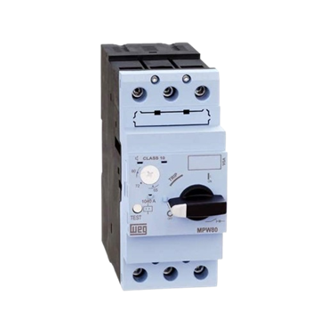
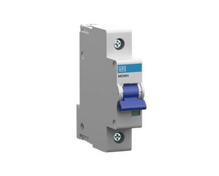
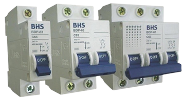
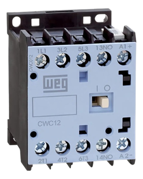
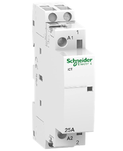
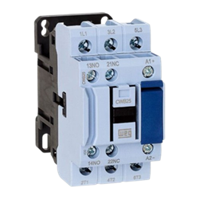
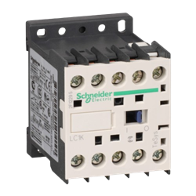
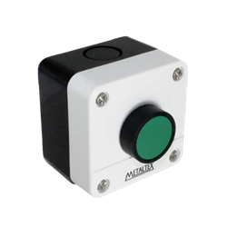
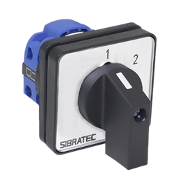

Dispositivos de Comandos Elétricos e Acionamento de Motores
O Site é uma explicação dos conceitos e aplicações de certos Dispositivos de Comandos Elétricos e Acionamento de Motores.
Disjuntores
Motor
O disjuntor Motor é um componente elétrico que serve para proteger um único aparelho, sendo o motor
elétrico
para evitar o curto circuito e o superaquecimento.
Aplicações
Proteção de motores trifásicos e monofásicos.
Sistema de Ventilação e compressores.
Equipamento de automação industria.

Fonte: Loja Eletrica
Convencional
O disjuntor convencional é um componente eletrônico que serve para uma proteção geral dos circuitos
elétricos, utilizado em redes elétricas residenciais, industriais e comerciais.
Aplicações
Iluminação e tomada.
Equipamentos elétricos de baixa potência.
Proteção de circuitos gerais.

Fonte: Dimensional
Os disjuntores tem diferentes tipos por números de polos que há nele.
-Disjuntor Monopolar(Monofásico): Utilizado para circutios ligados a uma única fase.
Muito utilizado em tomadas de 127V.
-Disjuntor Bipolar(bifásico): Utilizado para circuito ligados a duas fases. Utilizado
em circuitos com maior quantidade de volts, como um chuveiro de 220V.
-Disjuntor Tripolar(trifásico): Utilizado para circuitos ligados a três fases,
ligando/desligando as três ao mesmo tempo. Comum em equipamentos de grandes portes, como um motor
trifásico 380V

Fonte: Mundoeletrica
Contator
O Contator é um dispositivo eletromecânico utilizado para abrir ou fechar circuitos em altas correntes
com segurança. Fundamental para acionar motores, controle de iluminação e circuitos de alta potência
através de um comando de baixa tensão. No geral, ele é divido em dois tipos de circuito:
-Circuito de Comando: Por onde passa a corrente de baixa tensão, acionada por botões,
sensores ou temporizadores, que ligam ou desligam a bobina.
-Circuito de Potência: Por onde passa a corrente elétrica que alimenta equipamentos de
alta tensão. Geralmente possui 3 polos principais.
Aplicações
Sistemas de Iluminação.
Acionamento de Motores trifásicos.
Climatização e Aquecimento.

Fonte: Mercado Livre
Os Contatores tem diferentes tipos por números de polos que há nele.
-Contator Monopolar: Possui um único contato principal, utilizado para ligar pequenas
cargas.

Fonte: Dimensional
-Contator Bipolar: Possuem dois polos principais, utilizado em aplicações residenciais e comerciais. Ex: Ar-condicionado.

Fonte: Leroymerlin
-Contator Tripolar: O padrão industrial, possuem três polos principais, utilizados para alimentar motores trifásicos.
-Contator Tetrapolares: Possuem quatro polos principais, utilizados quando necessita do chaveamento das três fases neutros mais o neutro, ou para cargas muito específicas.

Fonte: Plenobras
Botoeira
A Botoeira é um dispositivo de ação mecânica que só altera o estado do circuito a partir do momento que
você mantém ela pressionada. Elas podem ser físicas ou sem fio, operando por pulso elétrico ou
aproximação.
Aplicações
-Partida de motores.
-Campainhas e interfones.
-Comando de pulso.

Fonte: Mercadolivre
Chave de Retenção
Chave de Retenção é um dispositivo de ação mecânica que altera o estado do circuito e permanece mesmo
depois de você soltá-lo. Ela possui uma trava mecânica interna que guarda a posição escolhida. O
indivíduo precisa intervir no dispositivo para fazer desfazer a ação.
Aplicações
-Botão de emergência.
-Interruptor de luz.
-Chave seletora.

Fonte: 47eletrica
Motor Trifáscio
Motor Elétrico de indução trifásico é uma máquina elétrica que converte energia elétrica trifásica em
energia mecânica de rotação. Ele é chamado de indução porque a corrente elétrica no motor é gerada por
indução eletromagnética. O motor possui duas partes principais:
-Estator: é a parte fixa do motor. É composto por um núcleo de chapas de aço e bobinas
distribuídas e alimentadas pela rede elétrica trifásica. As bobinas geram um campo magnético giratório,
responsável pelo funcionamento do motor.
-Rotor: É a parte móvel do motor. Está localizada no centro do estator. O campo
magnético do estator induz uma corrente elétrica no rotor, criando um campo magnético. A interação
magnética desses dois campos gera uma força que faz o rotor girar, produzindo um movimento mecânico.
Existem também outras partes fundamentais para o funcionamento do motor, como o entreferro, que é um pequeno espaço de ar entre o estator e o rotor. Este espaço tem que ser o menor possível para que o fluxo magnético passe de um lado para a outra com a menor perda de energia possível; as carcaças que servem para proteger os componentes internos e dissipar o calor.; os mancais(rolamento) suportam o eixo do motor, permitindo que ele gire livremente com o mínimo de atrito possível.
Multímetro
O Multímetro é uma ferramenta utilizada para medir grandezas elétricas. Elas podem ser:
Corrente: Corrente Contínua(DC) ou Corrente Alternada(AC). Medida em Amperès(A), que é a quantidade de
elétrons que passa por um condutor a cada segundo.
Tensão: Medida em Volts, é a pressão que impulsiona os elétrons através de um circuito, quanto maior for
o volts, maior será a quantidade de corrente que consegue vencer a resistência do circuito.
Resistência: medida em ohms, é a resistência elétrica que se opõem a passagem da corrente em um
circuito.